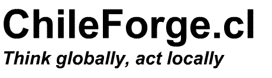
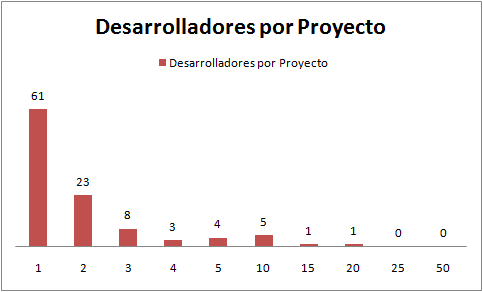
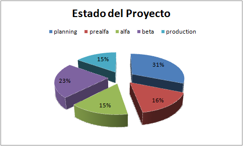
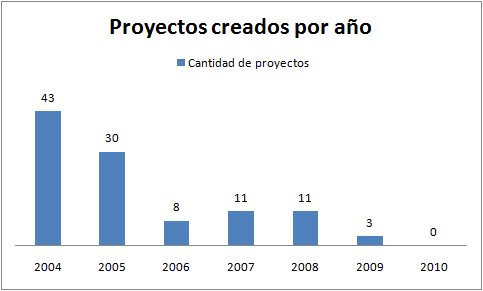
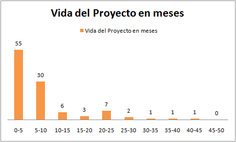

El estado del open source en Chile, la comunidad ChileForge
“Talk is cheap, show me the code” (hablar es barato, muéstrame el código) dice Linus Torvalds.
Recientemente Marco Zúñiga ha levantado un desafío, un test de blancura para la comunidad open source chilena, la idea es poner a prueba lo que dice Linus Torvalds, si en realidad estas comunidades pasan del discurso a la acción.
Resulta que hace unas semanas atrás decidí investigar los repositorios open source que tenemos en el país, principalmente motivado por un curioso incidente ocurrido con el sitio ChileForge (más antecedentes acá). Así que decidí revisar que es lo que había pasado con esta comunidad, y emprendí un análisis del repositorio ChileForge, A continuación comparto con ustedes el resultado. Creo que es un buen antecedente para aportar al debate sobre la viabilidad del open source en Chile, o al menos para los que están interesados en cobrarle la cena a Marco, ya sabrán donde no buscar ;)

Descripción del Sitio, tomada desde su home page:
*“ChileForge es un proyecto impulsado por el _*Departamento de Ciencia de la Computación de la Pontificia Universidad Católica de Chile, que busca aportar a la difusión y desarrollo de software en Chile, bajo el modelo Open Source.”_
Fecha Cierre de este análisis: 16 de septiembre de 2010
Resumen: el 52% de los proyectos ha liberado algún producto, lo que no garantiza que sea algo usable. El promedio de desarrolladores por proyectos es de 2.2. Desde hace 6 meses que no hay actividad en el sitio. Sólo 1 proyecto muestra actividad en el último año, sólo 2 proyectos muestran actividad en los últimos dos años.
Antecedentes:
Usuarios Registrados: 1.096
Proyectos Registrados: 193
Proyectos Catalogados: 106
El análisis se continuó sobre la base de los 106 proyectos catalogados.
Desarrolladores: la idea es ver la participación por proyecto, para determinar que tan comunitarios son los proyectos.
-
Total de Desarrolladores: 235
-
Tamaño promedio del equipo: 2.22 [desarrolladores / proyecto]
-
El 58% de los proyectos tienen sólo 1 miembro
-
El 22% de los proyectos tienes sólo 2 miembros
-
La distrubución de desarrolladores por proyecto es la siguiente:
Este gráfico muestra la distribución:

El eje vertical es la cantidad de proyectos, el horizontal es la cantidad de desarrolladores (miembros) inscritos en cada proyecto.
Los dos proyectos con más usuarios son:
-
Sistema Centro Médico 2005 (http://chileforge.cl/projects/tec) con 16 miembros, creado el 7 de abril de 2005, y cuyo único archivo liberado corresponde a una clase en PHP para enviar mensajes usando SMTP (importada de una versión anterior del proyecto PHPMailer en sourceforge).
-
Rizoma (http://chileforge.cl/projects/rizoma/), tiene 15 miembros registros, pero es un proyecto que decidió migrar a Savannah, al parecer por problemas de soporte con ChileForge. Este proyecto al parecer sigue vivo (tienen un blog donde informan que la versión 1.0 fue liberada para la FLISoL Santiago 2009).
Madurez de los Proyectos
El sitio permite catalogar los proyectos según el grado de madurez del proyecto, los estados posibles son: Planning (etapa de planificación), pre alfa (supongo que en este estado habrá algún prototipo), alfa (una primera versión sin mucha depuración), beta (con algunos errores, los usuarios ya empiezan a usarlo), production/stable (el proyecto ya está en producción), y mature (maduro, es decir, ya el producto se sostiene sólo y se aplican mantenciones, o se planifica nuevas versiones). La distribución se resume en el siguiente gráfico:

La clasificación es dudosa, por ejemplo, hay proyectos que han liberado código, que se ve bastante usable, pero aparecen como en etapa planning. En un caso (xanubis), el proyecto aparece catalogado como Production/Stable, sin embargo no ha liberado ningún archivo, y sólo tiene un mensaje que dice “Ya casi comenzamos el Proyecto Xanubis”.
Lo interesante es ver cuantos proyectos han liberado algún producto (archivos descargables). Para esto contamos aquellos proyectos que tenían disponible algún archivo para descargar. Sólo el 52% ha liberado algún producto. Pero, insisto que la calidad de estos entregables es dudosa, habría que descargar los archivos y analizarlos para dar un diagnóstico más preciso de la madurez de los proyectos, de lo poco que revise, puedo decir que casi siempre eran archivos que estaban en su primera versión, o simplemente algunos archivos anexos (como el caso mencionado arriba).
Control de versiones: 7 proyectos (7%) no tienen control de versiones de ningún tipo, 86 proyectos (81%) tienen configurado CVS, pero los repositorios juntan telarañas, pues nunca se han usado. De los que quedan (13), el uso es mínimo, con no más de 2 o 3 commits por proyecto. En este punto donde más se nota la inmadurez técnica de la comunidad ChileForge.
Actividad
El 41% (43) de los proyectos se crearon el año 2004, el 28% en 2005. La siguiente es la distribución:

Para medir el tiempo de vida del proyecto medimos la cantidad de días desde que fue creado el proyecto, hasta que fue liberado la versión más reciente de cualquier entregable del proyecto. Por ejemplo, el proyecto de mayor tiempo de vida (reqadmin), fue inscrito el 30 de mayo de 2005, ha liberado 6 archivos, el último corresponde a la versión 0.4 beta con fecha 8 de junio de 2008, entre la fecha de inscripción y el último beta han pasado 1.105 días (37 meses).
Usando este criterio, el tiempo de vida promedio es de 7,6 meses, la mediana es de 4.5 meses. La distribución del tiempo de vida de los proyectos se muestra en este gráfico (expresada en meses):

La altura de las barras representa la cantidad de proyectos que caen en el rango. Los rangos son de 5 meses. Por ejemplo, la primera barra indica que 55 proyectos tienen una vida de entre 0 a 5 meses.
El otro parámetro es ver cuanta actividad ha tenido el proyecto en los últimos meses, en este caso lo que medimos es la fecha del último producto liberado (el mismo parámetro usado para medir la “vida” del proyecto). En este punto los datos son desalentadores:
-
Actividad en los últimos 6 meses: ningún proyecto presenta actividad.
-
Actividad en el último año: 1 proyecto
-
Actividad en los últimos 2 años: 2 proyectos
Si medimos las noticias publicadas en portada tenemos que:
-
Hay 1 noticia de 2010, informando que se ha recuperado el dominio Chileforge.cl
-
Una noticia en 2009
-
28 mensajes en 2008
Conclusiones
ChileForge es una comunidad con muy poca actividad en los últimos años, si bien en sus inicios (2004) mostró un gran impulso, con el tiempo fue decayendo su uso, al grado que este año estuvo varios meses inactivo.
Para ser una comunidad de 6 años, el grado de inactividad es un mal indicador. Consideren que las comunidades open source tienen un alto grado de participación y actividad (Sourceforge, GitHub, incluso CodePlex, el repositorio open source de Microsoft).
¿Qué es lo que pasa con ChileForge? ¿Será que los usuarios prefieren hostear sus proyectos en los repositorios internacionales? ¿Falta de difusión? ¿O serán otras causas más profundas las que explican esta falta de actividad? Los invito a debatir este caso.
De todas maneras, les prometo que el próximo año voy a repetir este ejercicio, y vamos a revisar nuevamente el estado de esta comunidad.